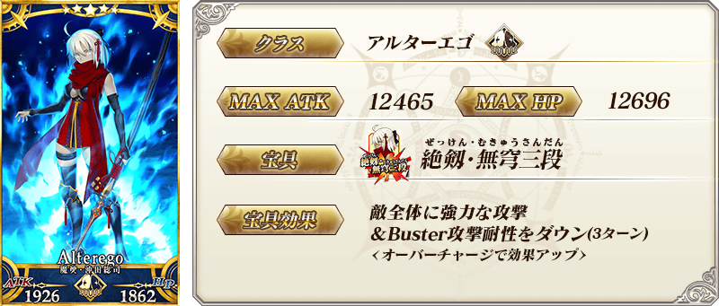
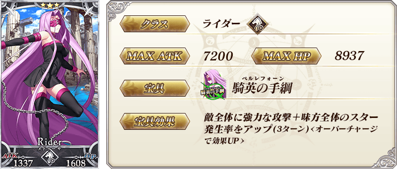
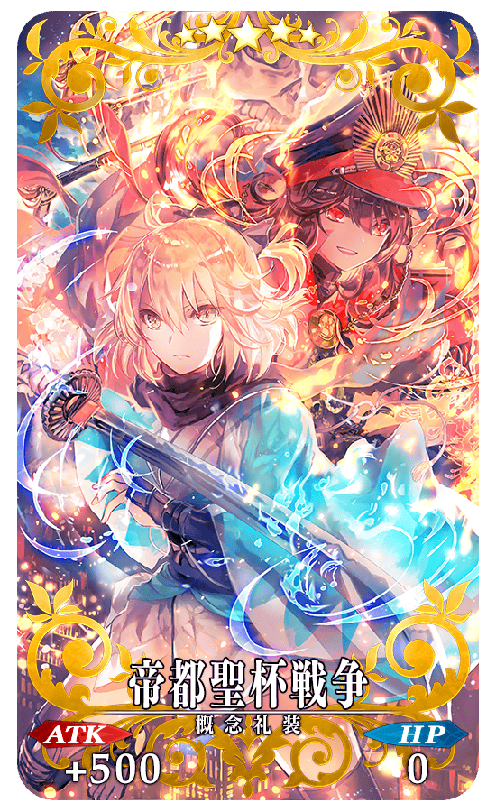
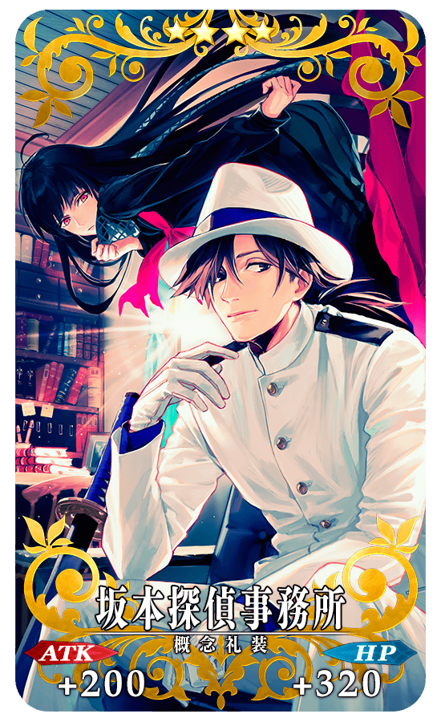
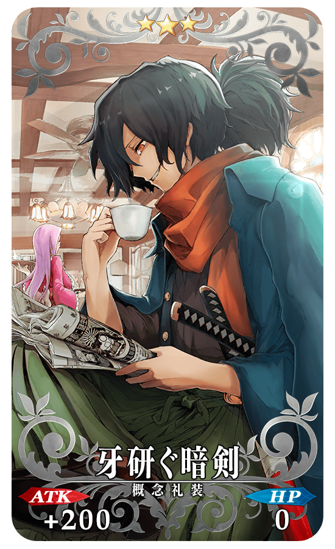
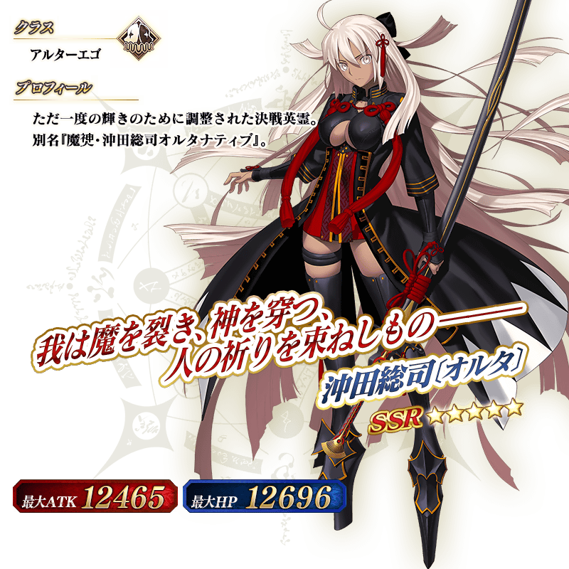

◆「GUDAGUDA帝都聖杯奇譚Pick Up召喚(每日交替)」期間◆
期間:2018年6月13日(三) 17:00～6月27日(三) 11:59
舉辦期間限定「GUDAGUDA帝都聖杯奇譚Pick Up召喚(每日交替)」！
新「★5(SSR)沖田總司〔Alter〕」「★3(R)岡田以藏」以期間限定登場！
※未到達終局特異點的狀態也能進行「GUDAGUDA帝都聖杯奇譚Pick Up召喚(每日交替)」。
本次包含上述Pick Up 6位Servant！
「★4(SR)Emiya(Archer)」「★4(SR)李書文」「★3(R)美杜莎(Rider)」「★3(R)美狄亞」以每日交替Pick Up，「★5(SSR)沖田總司〔Alter〕」「★3(R)岡田以藏」常駐Pick Up。
※沖田總司〔Alter〕、岡田以藏在Pick Up期間結束後不會追加到故事召喚。
※Emiya(Archer)、李書文、美杜莎(Rider)、美狄亞在Pick Up期間結束後仍會在故事召喚被抽出。
※Pick Up期間中，李書文就算通過第五特異點前也能入手。
※請注意岡田以藏不會從友情點數召喚被抽出。
詳情請在聖晶石召喚畫面左下的召喚詳細確認。
裝備期間限定概念禮裝「★5(SSR)帝都聖杯戦争」「★4(SR)坂本探偵事務所」「★3(R)牙研ぐ暗剣」的話，在期間限定活動「GUDAGUDA帝都聖杯奇譚」中會提升活動専用道具的掉落獲得數。
※「★3(R)牙研ぐ暗剣」在Pick Up期間中，也能在友情點數召喚獲得。
※請注意自友情點數召喚抽出「★3(R)牙研ぐ暗剣」在自動變還設定登錄★3(R)概念禮裝的情況，會變成自動變還的對象。
Pick Up期間中，期間限定Servant、Pick Up Servant、期間限定概念禮裝的出現機率提升！
10次召喚中確定1張★4(SR)以上和確定1位★3(R)以上的Servant！
※確定★4(SR)以上包含Servant和概念禮裝。
| 每日交替Pick Up期間 | 每日交替Pick Up內容 |
|---|---|
| 6月13日(三) 17:00～ 6月14日(四) 22:59 |
沖田總司〔Alter〕 Emiya(Archer) 李書文 美杜莎(Rider) 美狄亞 岡田以藏 |
| 6月14日(四) 23:00～ 6月16日(六) 22:59 |
沖田總司〔Alter〕 Emiya(Archer) 岡田以藏 |
| 6月16日(六) 23:00～ 6月18日(一) 22:59 |
沖田總司〔Alter〕 李書文 岡田以藏 |
| 6月18日(一) 23:00～ 6月20日(三) 22:59 |
沖田總司〔Alter〕 Emiya(Archer) 李書文 美杜莎(Rider) 美狄亞 岡田以藏 |
| 6月20日(三) 23:00～ 6月22日(五) 22:59 |
沖田總司〔Alter〕 Emiya(Archer) 岡田以藏 |
| 6月22日(五) 23:00～ 6月24日(日) 22:59 |
沖田總司〔Alter〕 李書文 岡田以藏 |
| 6月24日(日) 23:00～ 6月27日(三) 11:59 |
沖田總司〔Alter〕 Emiya(Archer) 李書文 美杜莎(Rider) 美狄亞 岡田以藏 |
※請注意會以每日交替變更Pick Up的Servant。





|  |
★★★★★SSR |
|  |
★★★★SR |
|  |
★★★R |



介紹沖田總司〔Alter〕、岡田以藏的寶具演出！
在「Fate/Grand Order」官方網站內的公告中，公開了「★5(SSR)沖田總司〔Alter〕」「★3(R)岡田以藏」的寶具演出。敬請確認。
介紹Emiya(Archer)、李書文的寶具演出！
在「Fate/Grand Order」官方網站內的公告中，公開了「★4(SR)Emiya(Archer)」「★4(SR)李書文」的寶具演出。敬請確認。
關於可入手活動限定Servant「★4(SR)坂本龍馬」的期間限定活動「GUDAGUDA帝都聖杯奇譚」詳情請自下述橫幅確認。